摘要
時間 | 2021/04 - 2021/06
角色 | 視覺整合、流行音樂黑膠封面發想者
方法 | 桌面研究、Persona & Scenarios
近年來黑膠唱片復古回歸的風潮不斷。我們注意到，黑膠風潮不僅僅純粹是復古潮流的再現，更再不知不覺中納入了許多現代元素。在當代的音樂舞臺上，黑膠唱片不再是過去傳統獨立唱片行販售的產物，更是現代時尚、文化與是品味質感的一種展現。我們以此為發想，欲以現代流行的設計元素，去重繪風靡各個時代，各種不同樂種的音樂風格。期望使現代聽眾對這些曾經風靡的音樂類型，找到它們與現代的新連結，以現代角度重新檢視這些音樂風格，賦予它們和在當代的新意義。
設計流程
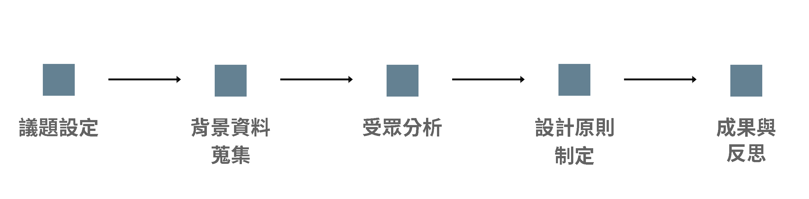
背景資料
音樂的展現有各種不同的流派，我們挑選了其中四種最受歡迎，且具有代表性的音樂類型，分別是：搖滾樂（Rock）、龐克（Punk）、藍調（R&B）與流行音樂（Pop Music），並分別對這四種音樂類型做資料蒐集與研究。
獨立搖滾音樂的音樂家和樂團是比較獨立自主，從創作、錄音到出版都是由自己去完成，比如超脫樂團（Nirvana）和珍珠果醬樂隊（Pearl Jam）。跟獨立音樂對比流行龐克是無政府主義，無專業化，後來轉變成關於愛情、朋友和校園的青少年文化，像是眨眼-182（Blink-182）和現代吸引不少年輕人的5秒盛夏（5 Seconds of Summer）。R&B 是非裔美式的流行音樂，這型的音樂融合了黑人的靈歌、流行音樂及嘻哈。雖然大多都與黑人靈歌的的情感高亢的類別有些類似，也是R&B不可或缺的重合元素。在1981年，因為MTV的創辦，音樂也發生了巨大的變化。音樂家和他們的音樂因為MTV在年輕人中獲得了流行，並要求音樂家和樂隊必須售唱片的條件，像麥可·傑克森（Michael Jackson），他成為了十年來最有統治力的音樂藝術家之一，他的創作專輯和錄像帶成為了現代流行音樂的標準。
使用者研究
我們以人物誌（Persona）的方式進行。
人物誌的主要人物設計為：對復古文化、獨立音樂感興趣的20 ~ 30歲之間的年輕女性。其對於相關文化的資訊來源主要來自於社交媒體，也喜愛參與實體活動，像是音樂祭、逛復古唱片行等，期望能將自身的喜愛更大程度的融入到生活中以及被社會接受。
設計原則
透過近年黑膠復古潮流再現的風潮，加上現當代的創新設計元素，回朔時代間的潮流類型音樂，並透過設計全新的黑膠唱片封套，秉持復古與創新融合的精神，再次將其重繪介紹給現現當代視聽觀眾。讓現代視聽觀眾再次體驗和檢視時代潮流的各類型音樂。
因此，設計原則上我們秉持著：
現代設計風格、復古樣式排版、統一色調為基準，以此呈現不同音樂風格的設計。
色調
彩度部分以低飽和度的色彩為主色呈現視覺上一致性，明度的部分也盡量調高，讓整體不那麼沈悶，色調部分使用偏暖的色系為主。
現代設計風格
考量到每種不同音樂類型的背景故事，以及各樂種設計者理念的呈現，分別使用不同的設計風格。詳細而言，搖滾樂依其叛逆、狂放不羈的特質融合類似惡搞的插畫元素；龐克的反社會化、諷刺性以拼貼的方式呈現；並以類似攝影手法的編排光線透到房間牆壁上的感覺去建立R&B舒適、沈浸的氛圍；最後以流行樂好於在歌曲中表達想法的特性設計了背景滿版文字與雲霧繚繞的感覺，並以常見的合成效果去達成整體設計的一致性。
排版
我們參考了許多早期的黑膠唱盤，多數以人物為設計主軸的封面都喜歡以臉部特寫、置中排版的形式呈現。我們選擇使用大衛像作為統一的人物素材物件，並去除使用真實人物或插畫素材可能導致的偏差性，將視覺重點放在整體元素的設計，以及四個音樂種類各自獨有的氛圍感營造。
成果與反思
搖滾 Stand like a Rock
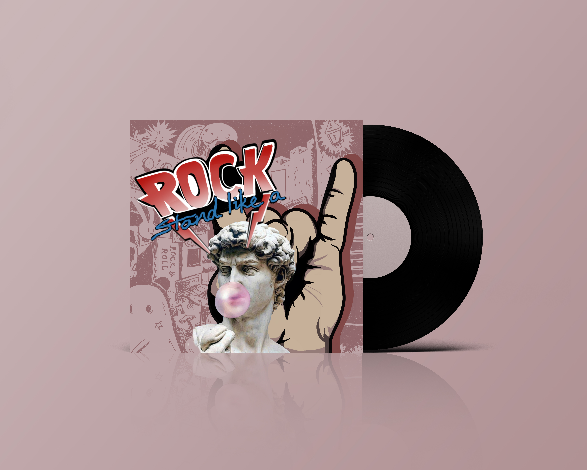
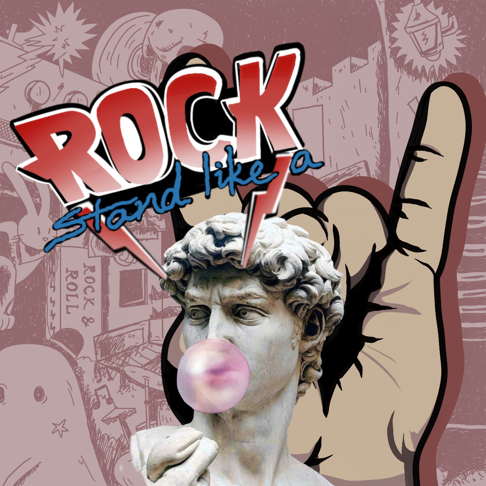
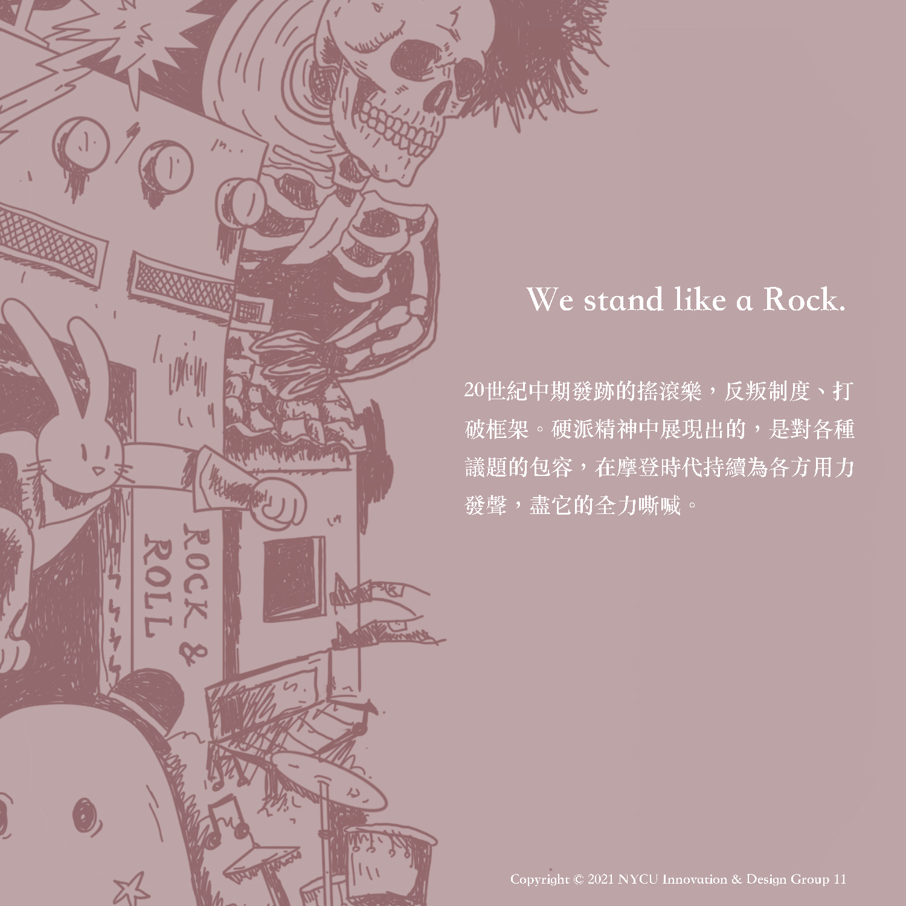
搖滾樂除了歌頌浪漫的愛情之外，還常常涉及到廣泛的主題：包括性、對「制度建立」的反叛、關注社會和生活方式。搖滾音樂除了有熱血的澎湃，也有抒情的敘事，醞釀出獨特的音樂氛圍。文字設計 Stand on the Rock 中的 Rock 採用較叛逆的紅白黑三色，去彰顯搖滾張狂豪放不羈的特質，並設計有稜有角的字體去展現搖滾的硬派風格。與之相對的是stand on the rock，以比較柔和的字體，去顯示搖滾音樂中溫柔抒情的部分。
背景的黑暗色調則是根據搖滾樂的創作來源做的發想。相較於主流音樂，搖滾樂常常試圖打破束縛，表達除人們感受到，但不敢說、或難以說出口的事情。搖滾樂不只是單純的音樂，它深深地影響一代人的思考模式，甚至是生活方式。搖滾樂唱的是聽眾心底的事，他描繪著世界上的事件與衝突。因此唱片的封底同時也意味著:即使世界是如次的混沌紛雜，你的聲音也然然可以被唱出，可以被聽見。
參考設計風格 : 加拿大硬搖滾滾樂團Triumph、英國披頭四
R&B Stand by,
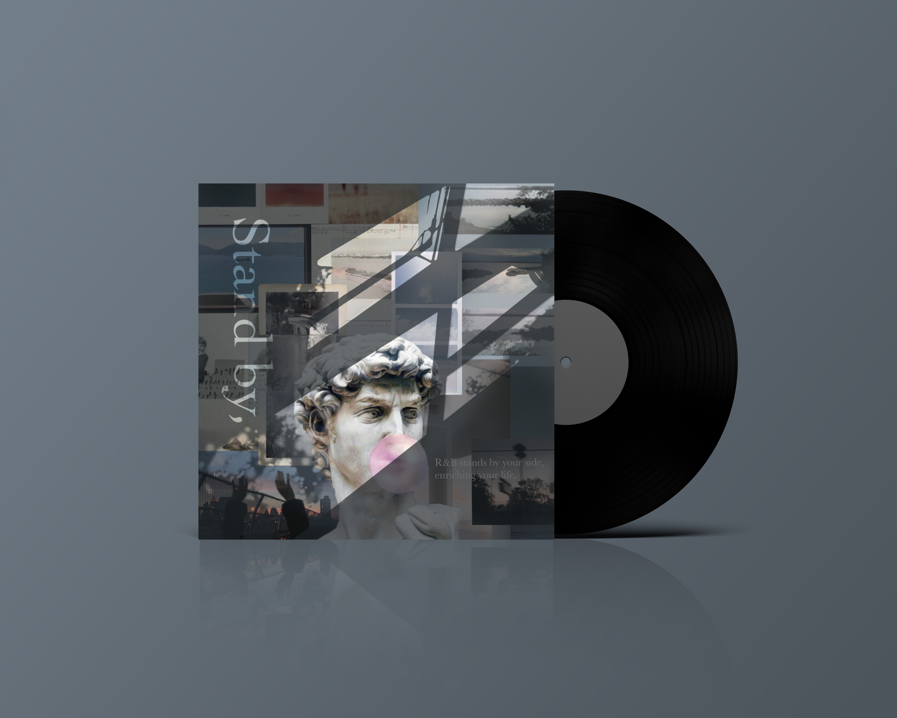
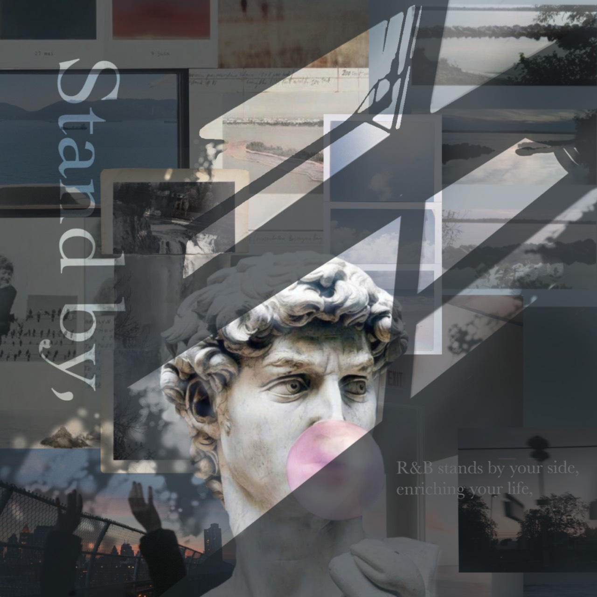
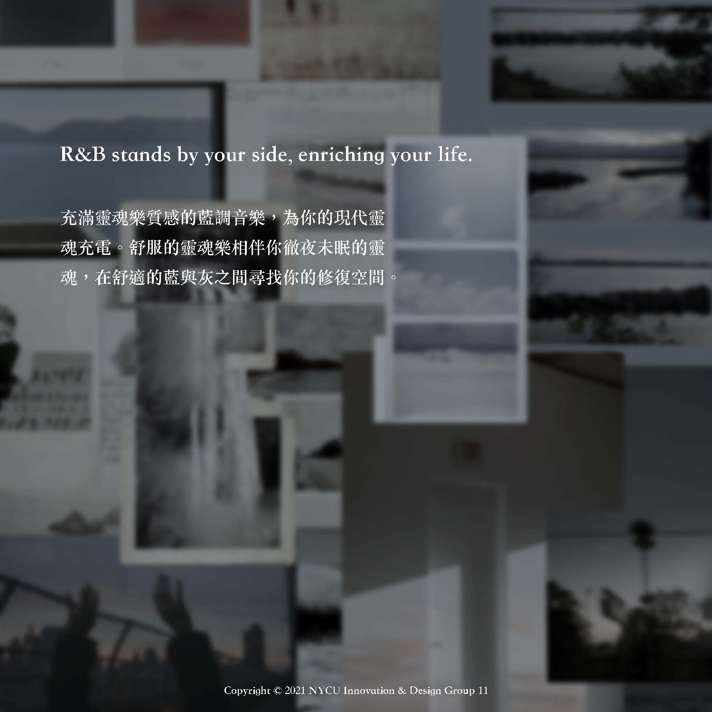
因為考量到整體作品色調的高明度和低飽和，修正了草圖偏深藍配的色，保留了原先設計構想中房間與窗的質感，以及房間內明暗的光線效果。
整體營造的氛圍是呈現R&B陪伴當代聽眾，在忙碌的世代提供靈魂一個休息、充電之處，題名stand by展現的也是同一個概念。並且，將藍調的灰藍色，以及靈魂充電等抽象的概念，以視覺化的方式在設計中展現出來。
參考設計風格 : Shinmorae
龐克 Black Roses
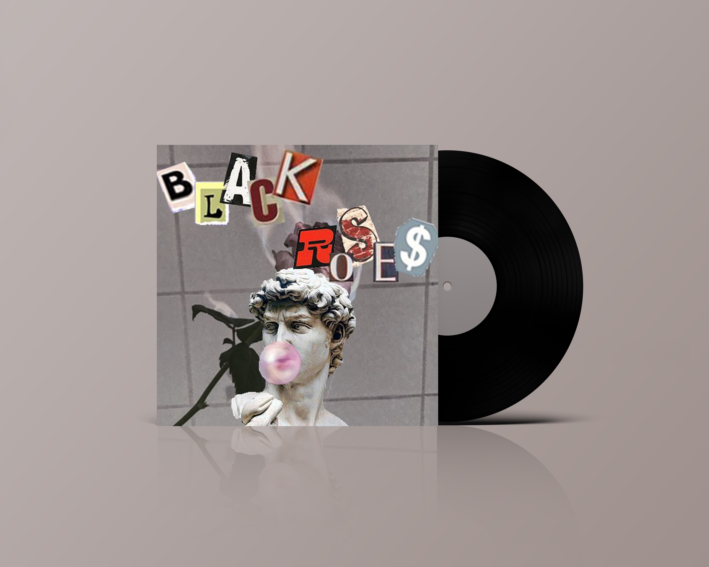
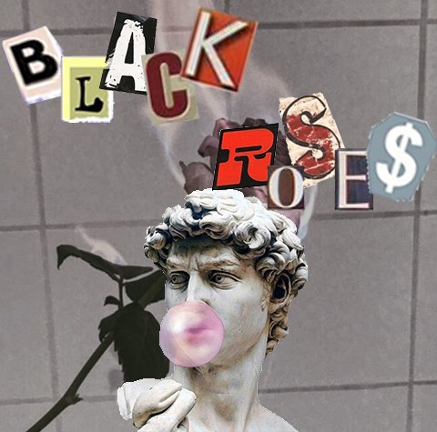
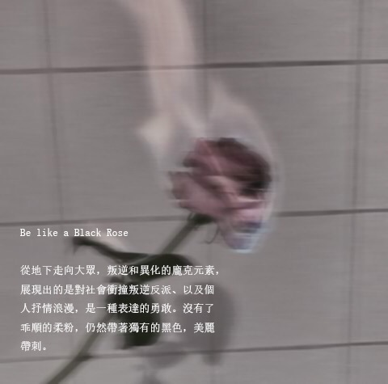
龐克搖滾是於1975年從英國、美國的地下樂隊中興起的一種激進的音樂形式。它成為青少年叛逆和異化的象徵，經常表現出諷刺和敵對的元素。從幾個經典代表樂團來看，雷蒙斯的歌比較偏向另類的的愛情故事，年輕歲月卻是對於政府的諷刺，我的另類羅曼史的是抒情的校園愛情。專輯以及團名都為BLACK ROSES黑玫瑰，代表著即使龐克擁有暗黑色彩的歷史，仍然同玫瑰一樣漂亮又帶刺。
專輯的背景是正被燃燒著的玫瑰，可以更明顯的凸顯出這張專輯的重點，大多龐克音樂專輯的自己設計，會展現從各種報紙撕下來的字體拼貼質感，因使選用同樣的風格來設計專輯的字體，作為一種對龐克文化的繼承。
參考設計風格 : 雷蒙斯、年輕歲月、我的另類羅曼史樂團
流行音樂 Blossom
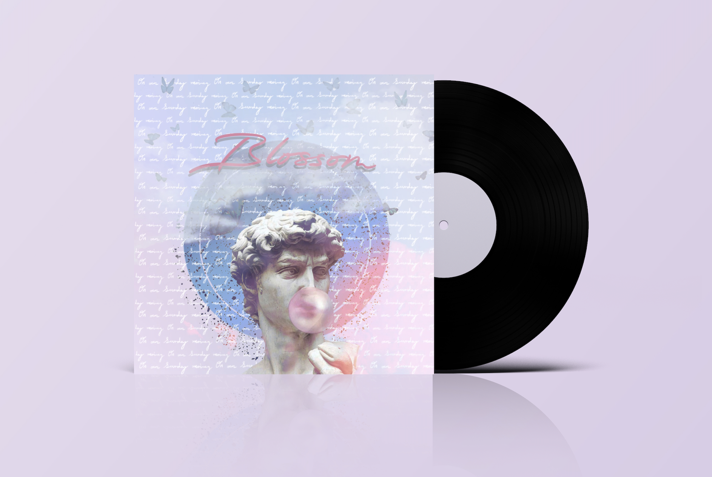
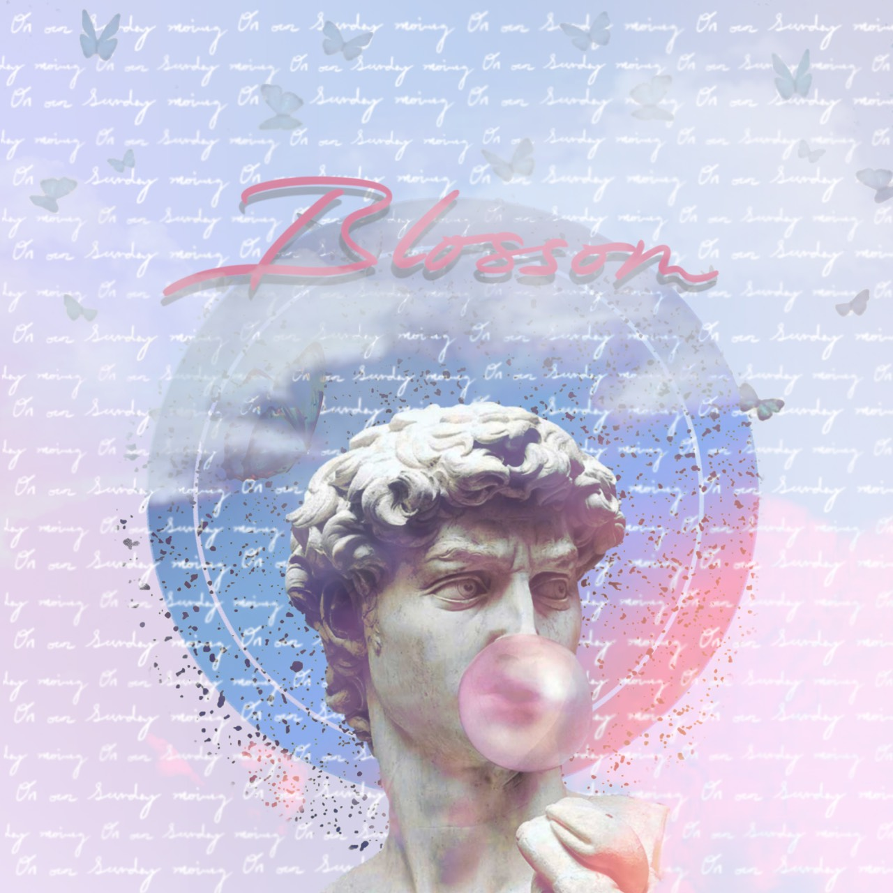
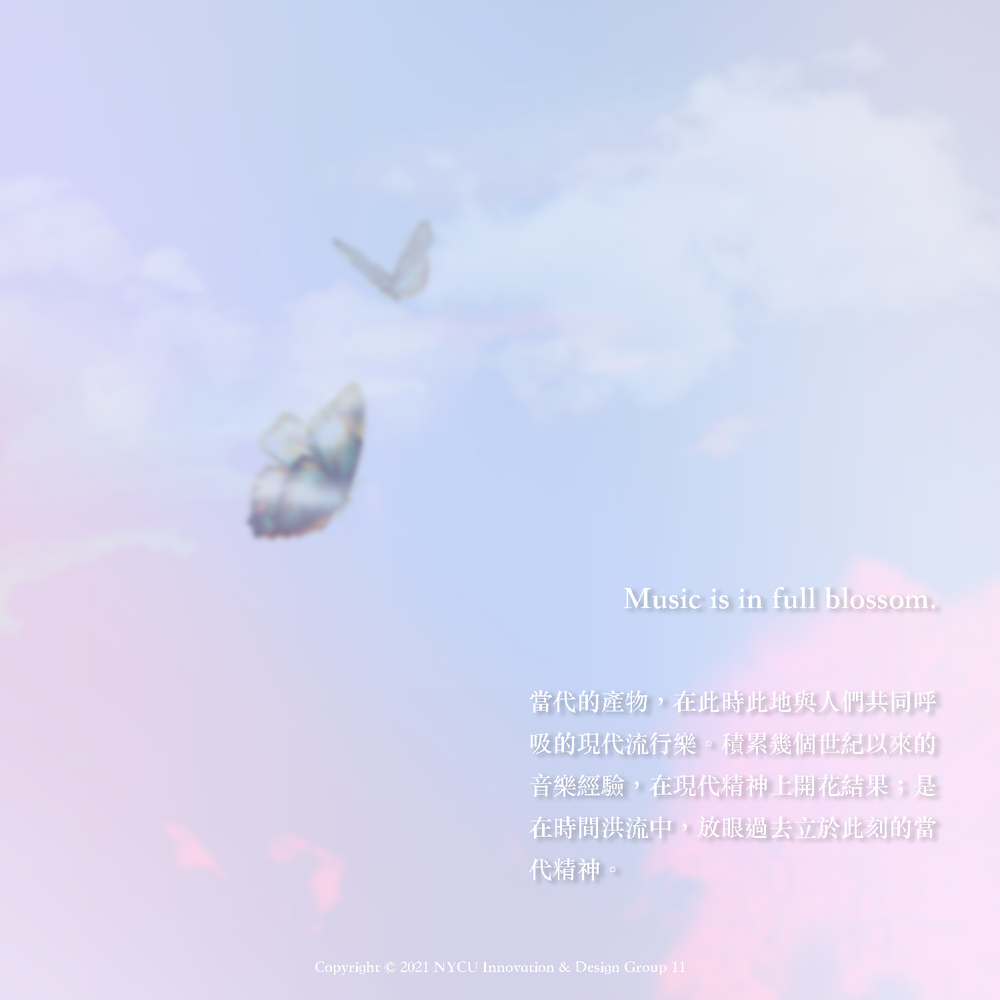
音樂發展至今吸取了各個不同年代的文化精萃，而當代最具代表性的Pop Music更是融合了不同年代的精華，在科技的助力下有了前所未有的發展。各地不同的音樂種類能彼此交流，碰撞出新火花，聽眾也能汲取更多不一樣的元素，進而促使新的音樂風格遍地開花，而Pop Music更是其中最流行的一種，各個不同的國家、文化都有以自己的方式詮釋的Pop Music。
對此，設計上選用蝴蝶飛舞的樣子去呈現多種型態的Pop Music，並且在背景中，滿版的文字”On our Sunday morning”，一則是致敬啟發本次設計的Maroon 5 - Sunday Morning，一則是表達流行音樂喜歡隱晦的將想法、要傳遞的訊息藏在詞曲中，並以雲霧繚繞的效果覆蓋，加上配色選擇以淺藍、淺粉呈現，表達流行音樂正當紅、生生不息的樣子。
參考設計風格 : Taylor Swift - Lover、Maroon 5 - Sunday Morning
反思
潮流是一個循環，當不同年代的流行互相碰撞時便可產生不一樣的火花，我們試圖以復古的元素結合現代設計去呈現我們所認為的音樂理念以及背後想表達的故事。
若可以擴大規模，再進一步進行田野調查，取得關注這類型音樂、喜好這類型音樂的聽眾的回饋，便能更精準的呈現出我們目標受眾的想法，進而得出能更加引起共鳴的設計，而非只侷限在我們個人的創作理念上。
音樂，是一個跨越時代的共通語言，若我們能在設計上融合更多不同的風格理念，找到更多的連結，創造更多意義，便能以更多樣的姿態去跟這個世界對話。